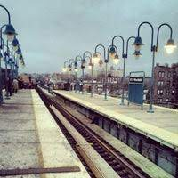

 The days I run away from my house to get away from the sound of my parents screaming, from the sound of my father punching the wall, from the sound of my mother throwing the glass plates against the cabinet, this train station is a paradise. Here my screaming sobs are only interrupted by my need to draw breath. Here my tears can fall continuously without me having to wipe them away. Here no matter how many people pass by me the only sound I hear is the sound of my heart beating in my chest. There is no limitation here. I can stay here until I can feel the warm rays of the sun burning my skin and watching the dark sky transform into many shades of orange and pink.